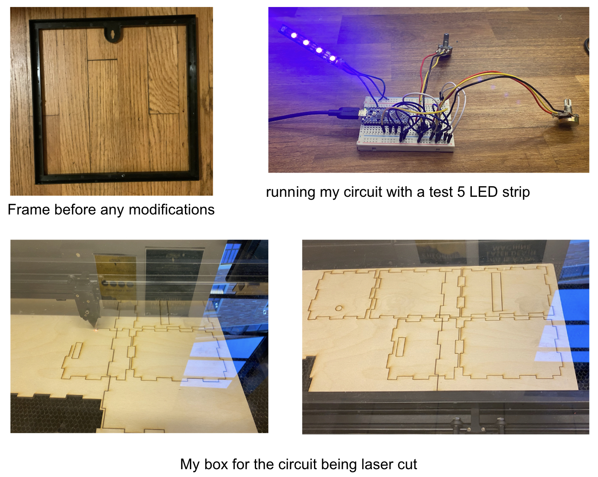
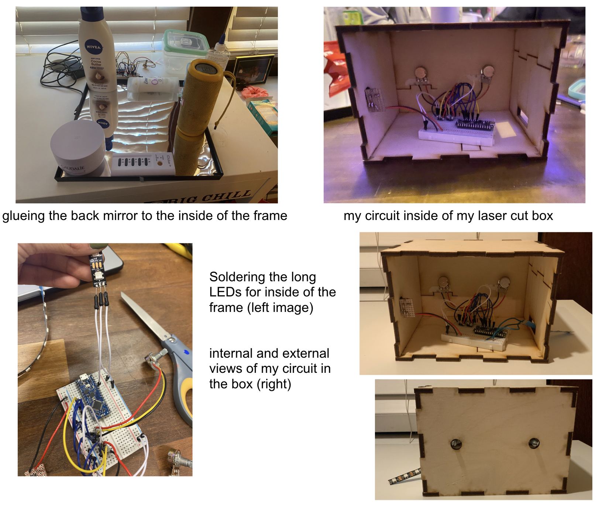
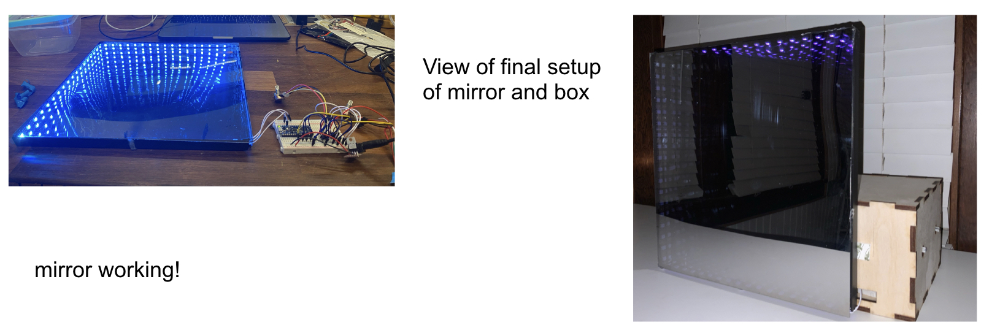
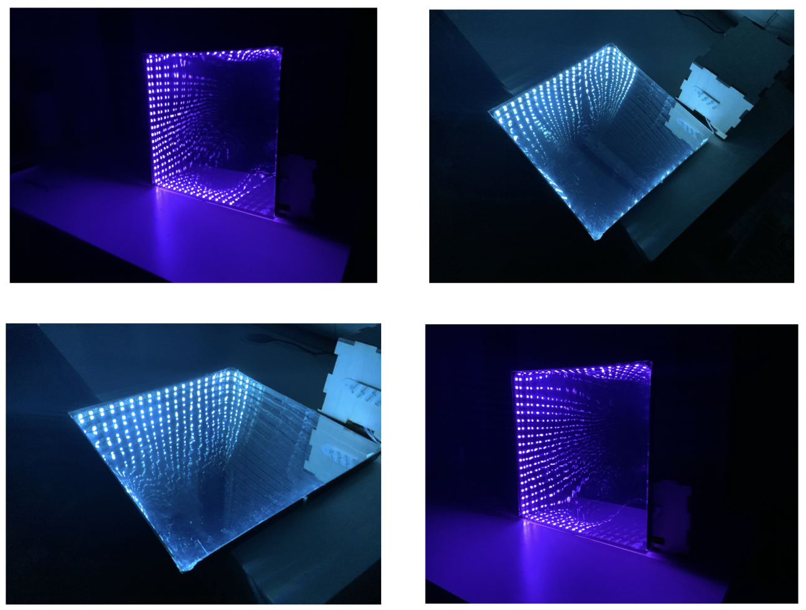

Check out the code I used for this part of the lab:
Part 2: Interactive Sensor "Box"
When thinking about how I wanted to portray my sensor box, I did some research on LED projects and art and came across an infinity mirror. I’d seen infinity mirrors before but never actually looked into how they work. This seemed like enough curiosity and desire to make something work and this was the direction I decided to head.
I started with my circuit for this project (as I knew this was the most important and I also needed to wait for some supplies to arrive). I began by soldering my potentiometers and then building my circuit. When working, I reused my previously soldered neopixel strip to make sure everything was working smoothly. Because I knew I’d be using a lot of LEDs, I decided to incorporate a barrel jack and voltage regulator to power the neopixel strip.
I started the code with the code I used from the first part of the lab but as you can see in the attached gist, I made a lot of changes. I decided to use one potentiometer to work with the color mode and the other to work with brightness of the LEDs.
To build my physical structure, I started by taking apart a 12 x 12 frame that could hold my LEDs and the two thin mirrors I would need. When brainstorming, I decided that I would laser print a smaller box that would sit outside of the actual frame and mirror to hold my circuit. The laser-cut box was made in makercase and edited in Adobe Illustrator. In Illustrator, I added holes for my potentiometers as well as spaces for access to my circuit through my computer and to an external power source.
Once the box was complete, I moved to the mirror. I used a thin mirror sheet, glued to a piece of cardboard as the background or back mirror. I cut a small hole in the bottom corner of the plastic frame so that the LED strip would have a way to connect to my box. I then lined the interior of the frame with my neopixel strip. After the LEDs were in, I placed a two-way acrylic 30% transparent mirror on top to produce the infinity effect. The way the concept works is that the light from the LEDs is reflected into the mirror and bounces off the top reflective mirror giving the infinity effect.
See below for some images throughout the process!
   Lab Part 1: Variable Input & Output
The first part of this lab was rather straightforward as I learned how to work with analog input and output. I used a rotary potentiometer (10K ohm), a photocell, 3 resistors, and 2 LEDs.
I adjusted the brightness of the LEDs with the analogWrite() function and used the analogRead() function for the variable resistor values. This was my first time working with a serial monitor and I found it really cool to see the changes in the values as you adjusted the potentiometer.
My mirror in action! So happy with how this turned out!